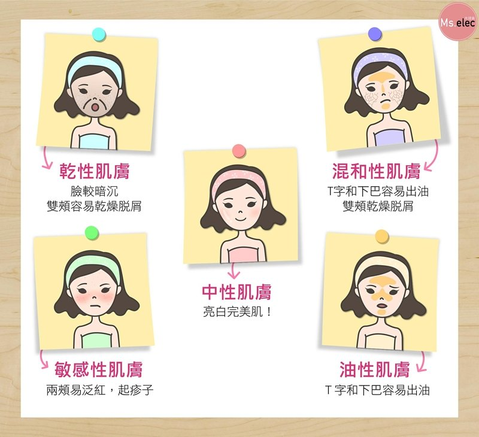
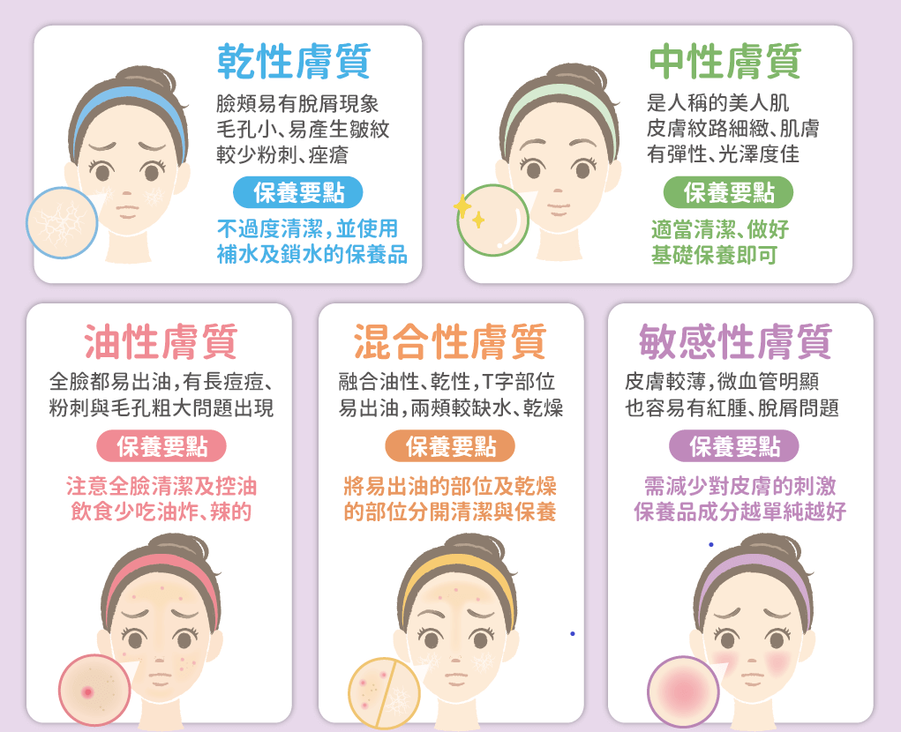
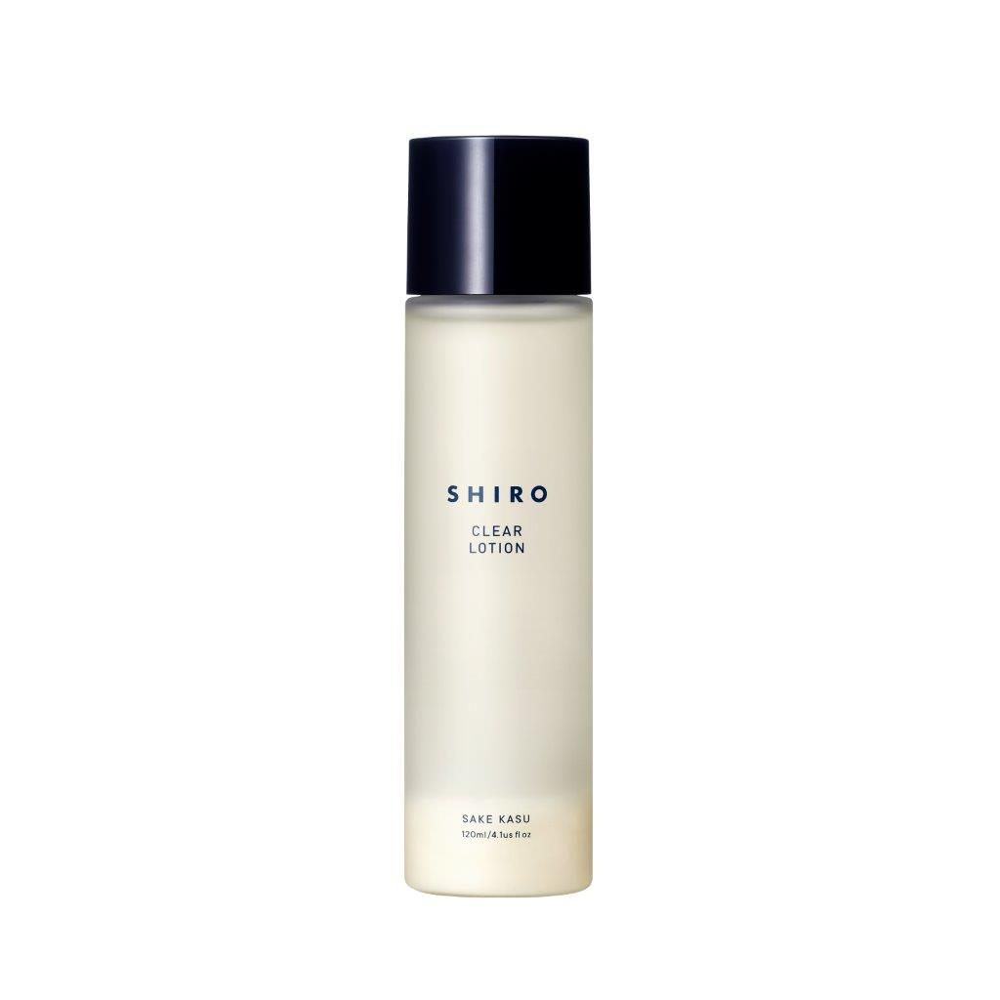
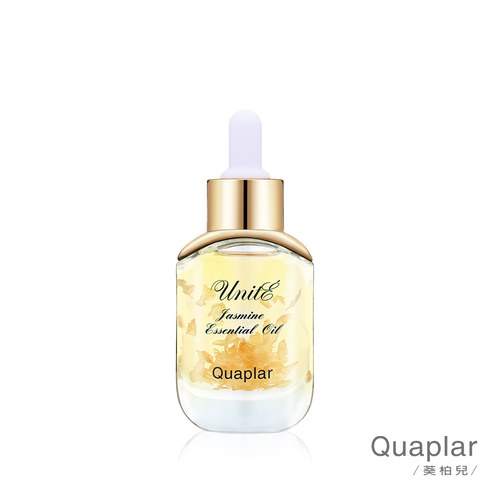
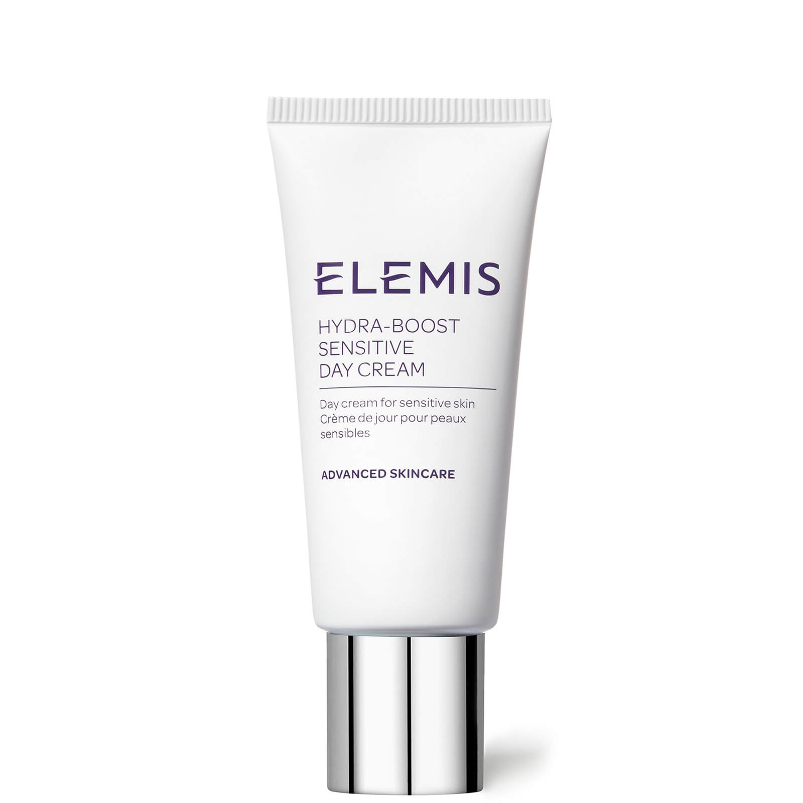
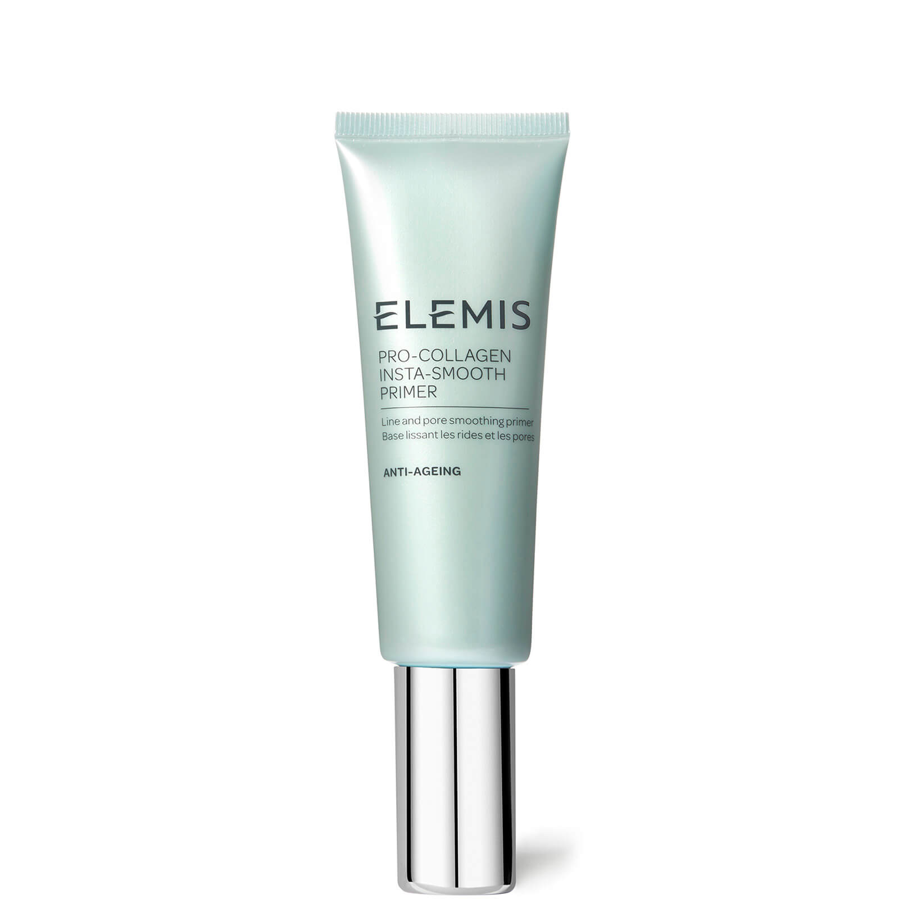
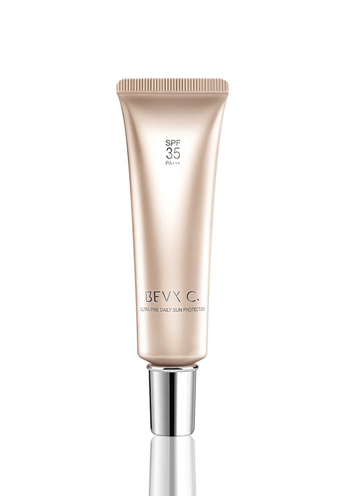
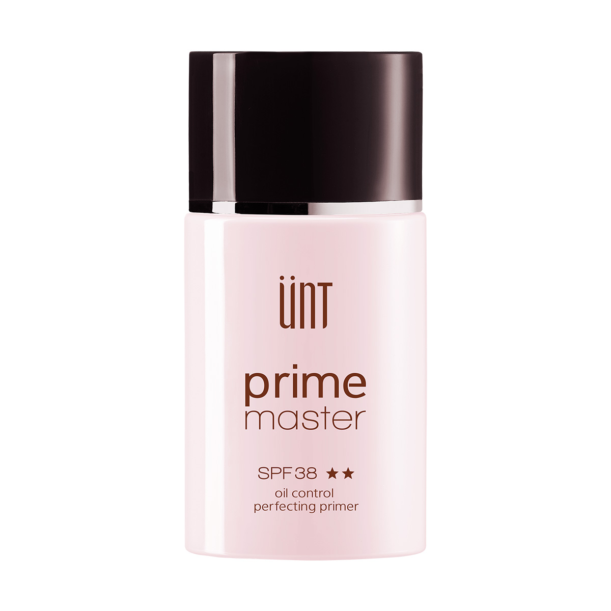

|  |  |
認識肌膚與產品挑選:
乾性肌膚
乾性皮膚膚質細膩、較薄，毛孔不明顯，皮脂分泌少而均勻，沒有油膩感覺。 皮膚比較乾燥，看起來顯得清潔、細膩而美觀。 皮膚角質層 水份低於10%，皮脂分泌量少，表現為多皺無光澤。 乾性皮膚的顯著特徵皮脂分泌少，皮膚乾燥、白皙、缺少光澤，毛孔細小而不明顯。
中性肌膚
中性肌膚介於乾性和油性肌膚之間，是水油均衡的最理想狀態。 因為水分和皮脂量適當，且肌膚屏障鞏固，因此既不會滿臉油光，也不會因為 水分不足而感覺緊繃。
油性肌膚
皮脂分泌旺盛，毛孔粗大，膚色較暗，皮膚外觀多粗厚、油膩，容易流汗，易產生污垢，皮膚不易老化，不易產生皺紋，易長粉刺、痤瘡，及 其後易留色素印、凹洞或疤痕結節
混合性肌膚
T區很容易出油出汗，如果清潔不乾淨會長痘痘，毛孔粗大。 而兩頰出油很少，不如額頭、鼻頭那麼多，看上去，皮膚紋理比T區細膩。
妝前保養步驟:
|  |  |  |
化妝水>>精華液>>乳液 : 以達到臉部保濕的效果
|  |  |  |
可以使用妝前乳、隔離霜、飾底乳擇一使用 : 最主要目的一樣在保濕效果，不然過幾個小時就容易脫妝。其次是修飾毛孔或是防曬功能。
使嘴唇有水分，待會上唇膏會比較好上。
妝前保養的重要性:
肌膚如果不好好保養/保濕，
疲勞肌 乾燥 等 各式各樣的問題就會找上你囉！
但如果在上妝前能正確的 ‘’ 預備好肌膚 ‘’ 就不需要上過多的底妝 or 化妝品來修飾囉